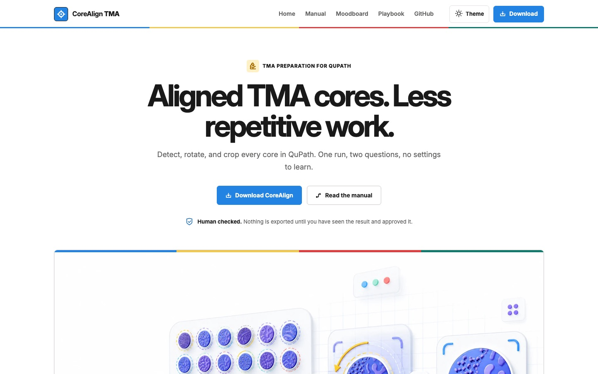

01 · QuPath · โอเพนซอร์ส01 · QuPath · open source
CoreAlign TMA
หาชิ้นเนื้อทุกชิ้นบนสไลด์ tissue microarray หมุนแต่ละชิ้นให้ตั้งตรง แล้วส่งออกภาพที่พร้อมวิเคราะห์ ถ้าไม่แน่ใจตรงไหน จะหยุดถามคนก่อนFinds every core on a tissue microarray, turns each one the right way up, and exports images ready for analysis. It stops and asks a person when it is unsure.
1 รอบ1 runต่อสไลด์ในเวอร์ชัน 2.0 จากเดิม 3 ถึง 4 รอบper slide in version 2.0, down from 3 to 4
เปิด CoreAlignVisit CoreAlign
